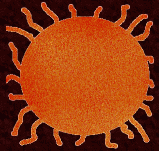
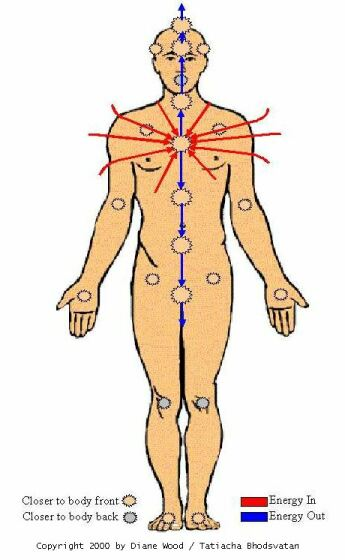

Потоки энергии и монстр со щупальцами
Я читала сообщения от WingedWolf в течение достаточно долгого времени, но до сего момента, к своему стыду, я не придавала значения ничему, что описывалось в них. Последнее сообщение, наконец, стимулировало меня на действия, на которые я раньше не решалась. Итак, мальчики и девочки, мы собираемся перейти к самым основам изучения энергии. Для большинства из вас это будет совсем простой вещью. Я нацелена на людей, которые ждут, что методы WingedWolf помогут им. И я написала эту статью специально, чтобы пояснить о методах WingedWolf. Здесь, на схеме, мы можем видеть её симбиота:

Вероятно, это выглядит страшно для большинства людей. Мы видим светящегося монстра с множеством щупалец и – о, боже! – оно прямо на нашем сердце! Это совершенно нормальная реакция. Если бы вы показали ребёнку своё чрево, вы не могли бы обвинить его в том, что он отреагировал бы на это плохо. Так же и автор показывает картину того, что есть внутри каждого из нас, сея этим панику. Я заранее приношу извинения за размер этой картины, но это как раз то, что может внести ясность в мои объяснения. Это карта вашего энергетического тела:

Я хочу, чтобы вы обратили особое внимание на сердечную чакру… примерно в этой точке должен находиться симбиот. Наша сердечная чакра является чрезвычайно важной для всех из нас, особенно для нормальной работы нашего организма. Симбиот обычно принимает форму светящейся массы с большим количеством корней, потоков энергии, как вы можете видеть на диаграмме. Это лежит в основе нашего бытия, и, как правило, в такой степени, в какой люди пользуются своим центром энергии при выполнении манипуляций с энергией, заземлением или защитой от атак. Не могу не подчеркнуть, насколько это важно для каждого - и человека, и вампира. Что предлагает делать нам WingedWolf для излечения от вампиризма, это не что иное, как частичное удаление сердечной чакры. Я не знаю, что заставило её поверить в то, что это будет хорошей идеей для неё, тем более что касается применения этого по отношению к другим. Удаление этого энергетического существа равносильно удалению части сердца в целях избавления от повышенного давления. Это действие не только лишнее, но и опасное. После прочтения её страницы несколько раз, я пыталась вникнуть в смысл её суждений, но мой мозг отказывался в это верить.
Для тех, кто не понимает, как работает энергия его тела, я могу значительно упростить задачу. Представьте на минуту, что внутри вас течёт система водных каналов. Независимо от того, насколько они загрязнены, они всё равно будут течь в вашем теле. Энергия каждого из этих каналов течёт по-разному, но, тем не менее, она находится в балансе. Это нормально. Удаление центральной части, через которую проходят эти каналы, вызовет гигантскую утечку энергии, точно так же, как если бы вы вынули пробку в ванне, наполненной водой. И эта утечка будет только усиливаться, охватывая весь организм. Если человек был вампиром, то вообразите, какую боль вызовет насильственный разрыв его энергетических связей. Я могу попытаться вылечить таких людей, но потребуется много времени, чтобы восстановить то, что было повреждено внутри. Я не могу даже представить те душевные страдания, которые будут этому сопутствовать.
Что я в действительности делаю? Я призываю людей очень хорошо подумать, прежде чем они решат испытать на себе подобное «лекарство». Каковы ваши мотивы? Какую поддержку вы хотите получить? Вы же сами полностью осведомлены о том, что может облегчить боль ваших негативных моментов в вампиризме. Я была вампиром всю свою жизнь. Я не часто высовывалась из своего укрытия и сообщала об этом людям, но я прошла через всю боль, страдания и разочарования, какие могли встретиться на этом пути. Я не могу сказать, что ваш путь будет лёгким, но я не хочу давать ложную надежду, потому что это навредит вам ещё больше и усугубит ваш энергодефицит в будущем. У нас в сообществе есть несколько людей, которые действительно прошли длинный путь, и они скажут то же самое, что и я по поводу предлагаемого WingedWolf «лечения». Все они подтвердят мои слова. Это не излечимо так же, как цвет вашей кожи. Любой вампир, который утверждает, что он был исцелён от вампиризма, не был вампиром. Ключ к преодолению боли в нас самих, и мы должны развиваться и быть сильными, чтобы найти его. Он не может быть одинаковым для каждого, но вы сильно удивитесь, увидев, какими сильными вы стали, если просто дадите себе шанс на развитие.

Автор: Trollkvina.
Источник: sanguinarius.org

Перевод: Николь.
Редактирование: Abyah.
(собственность vampirecommunity.ru)
[Наверх]